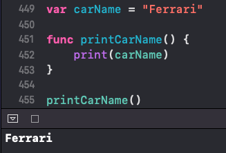
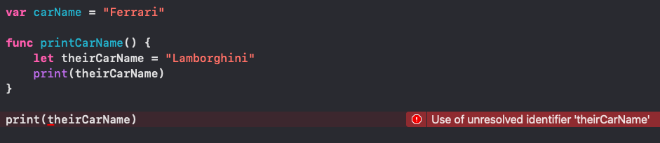
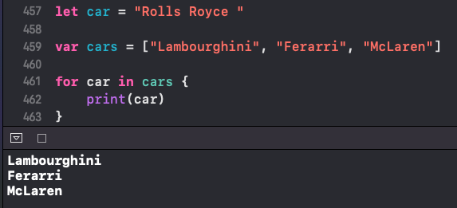
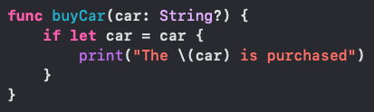
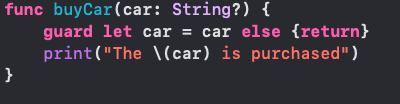
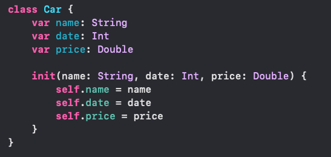

Global scope is defined outside of a function, loop, or {} in general.
Local scope is the opposite as it is defined in a function, loop, or {}.
A global scope can be used anywhere in the file, while local scopes can only be used in the function, loop, or {} it was defined in.
If the local value was attempted to be printed out outside of the {}, then there will be an error
Variable Shadowing is when a scope is defined in two different locations. They are different as one is usually global and one is local.
You can see "car was defined twice"
In fact, Variable Shadowing can be used with the if-let syntax, especially when unwrapping an optional value.
This can also be written in a guard-statement
As your writing an Initializer, you can use the assign the same named variables to each other to keep the code simple and logical. The self syntax makes it clear that the properties are set to the properties in the parameters passed into the initializer.
